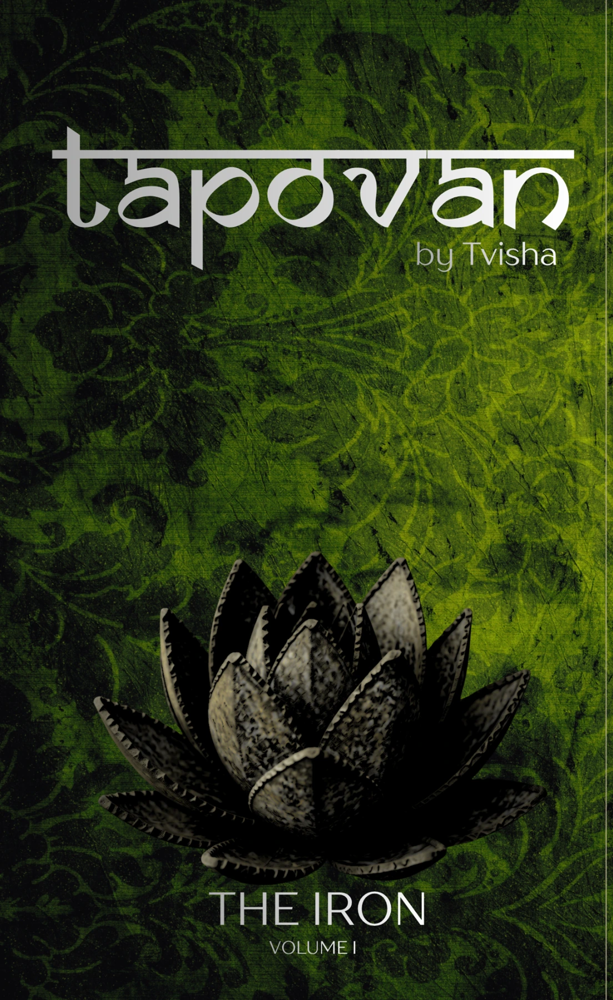

Tapovan · Volume I
Tapovan:
The Iron
Historical fiction rooted in the border territories of Gujarat and Rajasthan.
In a drought-stricken landscape, Hiranmay Singh is shaped by the forge, his people and a world under pressure. Tapovan follows lives caught between duty and survival while holding close the culture, craft and memory that make a place worth preserving.
This page can grow with the final synopsis, publication information, historical notes, excerpts and purchase links.
Iron, when heated enough, becomes gold.
— Gujarati proverb